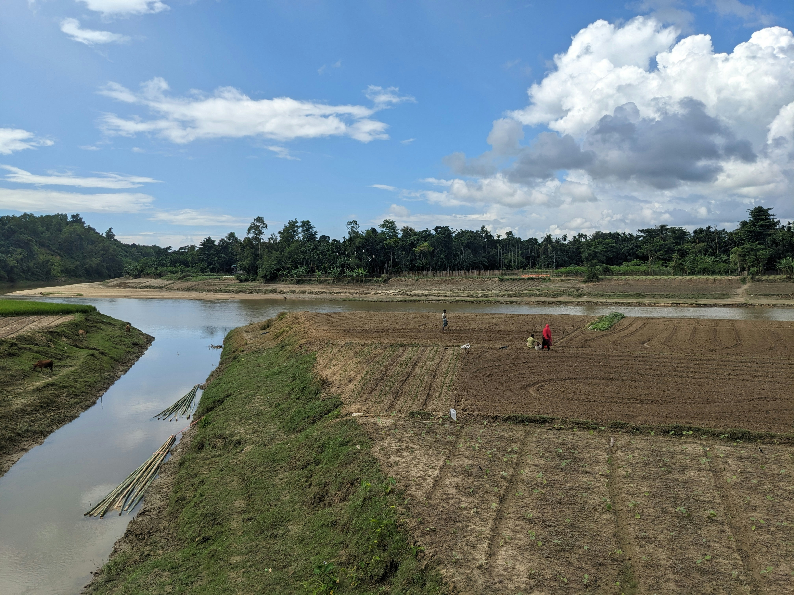
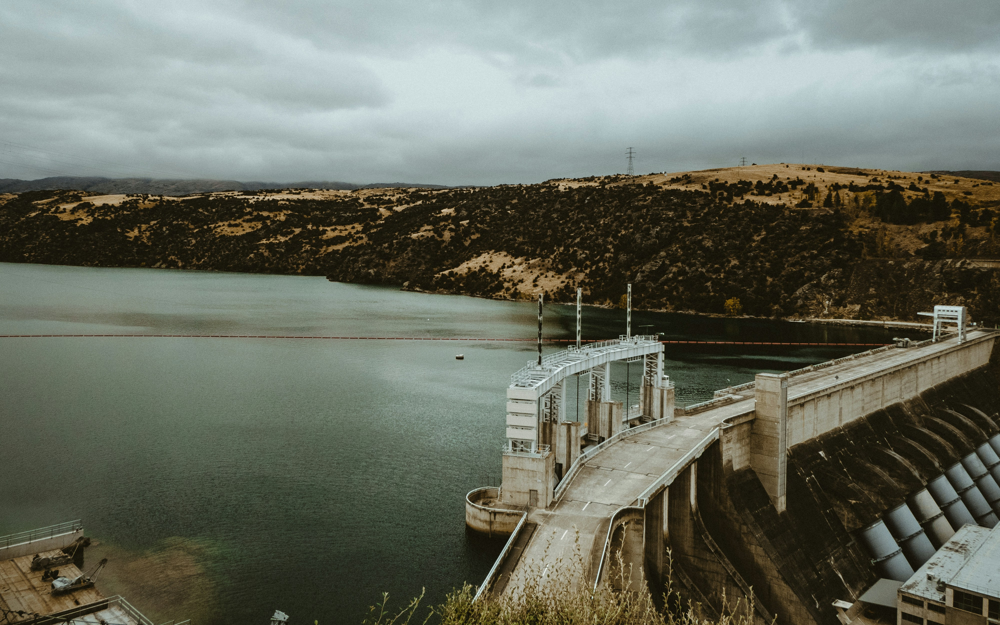

Gestão da Água no Campo
O uso consciente e tecnologias de irrigação eficiente no campo garantem a preservação dos recursos hídricos, fortalecendo a produção agrícola e protegendo ecossistemas aquáticos.

Acesso e Qualidade na Cidade
Nas cidades, garantir acesso universal à água potável e saneamento básico é fundamental para a saúde pública e qualidade de vida, evitando doenças e promovendo bem-estar social.
Conexão Sustentável
A integração das políticas de gestão de água entre campo e cidade assegura a sustentabilidade dos recursos hídricos, favorecendo a biodiversidade, economia local e o futuro das próximas gerações.
